| 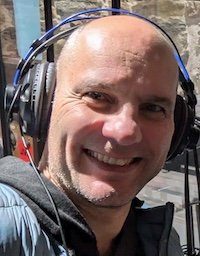 |

|
| 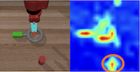 |
| 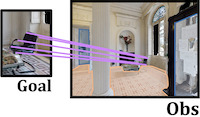 |
| 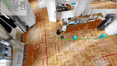 |
| 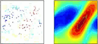 |
| 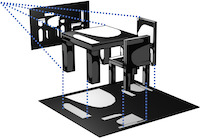 |
| 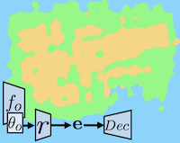 |
| 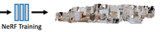 |
| 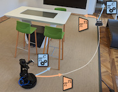 |
| 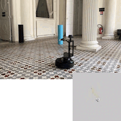 |
| 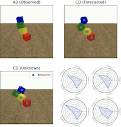 |

|

|

|
| 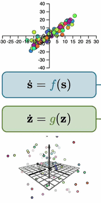 |

|

|

|

|

|

|

|

|

|

|

|

|

|

|
Christian WOLF is Principal Scientist at Naver Labs Europe, where he leads the Spatial AI team. He is interested in AI for Robotics, in particular machine learning and embodied computer vision; large-scale learning of the capacity to perform high-level reasoning from visual observations, and the connections between machine learning and control. He is a member of the directing committee of GDR ISIS and co-leader of it's topic "Machine Learning". He has supervised 18 defended PhD theses, is an associate editor of IEEE-Transactions on PAMI and area chair of NeurIPS (2020, 2021, 2023, 2024, 2025), ICLR (2021, 2023, 2024, 2025), ICML (2021, 2022), CVPR (2020,2025), ICCV (2021, 2023, ) and ECCV (2022, 2024).
From 2005 to 2021 he was associate professor (Maître de Conférences, HDR) at INSA de Lyon and LIRIS, a CNRS laboratory, where he was also the head of the AI chair / chair in Artificial Intelligence (the group). He received his MSc in computer science from TU Vienna, Austria, in 2000, and a PhD in computer science from INSA de Lyon, France, in 2003. In 2012 he obtained the habilitation diploma, also from INSA de Lyon. In the past he was also member of the scientific committee of GDR IA; member of the board of AI experts at the French national supercomputing cluster GENCI, and member of evaluation ANR committee "Artificial Intelligence" from 2019-2021 and ANR committee "Interaction and Robotics" from 2016-2018. Twitter: @chriswolfvisionBlog/Medium: @chriswolfvision
Recent news ( All publications | Google citations page )
- 10.01.2022: I joined Naver Labs Europe as Principal Scientist!
- 25.11.2020: I am outstanding BMVC 2021 reviewer.
- 20.06.2021: My student Pierre Marza won the Multi Object Navigation Challenge at CVPR 2021! [arxiv].
- 19.05.2021: I am outstanding CVPR 2021 reviewer.
- 07.04.2021: Fabien Baradel, former PhD student at our group, received the runner-up (2nd place) thesis prize by AFRIF (French association of pattern recognition). Congrats! [Prize-page].
- 28.08.2020: I am outstanding BMVC 2020 reviewer.
- 12.12.2019: My AI Chair position has been accepted, titled: "REMEMBER - Learning Reasoning, Memory and Behavior", which will provide funding for the next years of our research! The chair is co-financed by ANR, Naver Labs Europe and INSA-Lyon. Team members are Olivier Simonin, Jilles Dibangoye, Laetitia Matignon and Boris Chidlovskii.
- 26.11.2019: I joined IEEE-Transactions on PAMI as an Associate Editor.
- 12.07.2019: ANR grant "Delicio" accepted, addressing stable and robust control in complex environments combining machine learning and control theory. Partners:
- LIRIS/INSA-Lyon (Christian Wolf (Project Leader), Laetitia Matignon)
- CITI/INSA-Lyon (Jilles Dibangoye, Olivier Simonin, Ievgen Redko (LHC Laboratory))
- LAGEPP/Lyon 1 University (Madiha Nadri, Vincent Andrieu, Daniele Astolfi Laurent Bako(AMPERE Laboratory), Giacomo Casadei(AMPERE Laboratory))
- Onera (Sylvain Bertrand, Julien Marzat, Hélène Piet-Lahanier)
- 29.05.2019: I am outstanding CVPR 2019 reviewer.
- 10.09.2018: We released complementary mask prediction on VLOG and EPIC KITCHEN datasets (saves ~2 months of calculation on a single GPU).
- 16.05.2017: My former PhD student Natalia Neverova won the 2017 French PhD thesis prize of Club EEA/GDR ISIS for work on Deep Learning of Human Motion. Congratulations!
- 01.05.2016: I am outstanding CVPR 2016 reviewer.
- 12.02.2016: French-Canadian ANR/NSERC project "Deepvision" has been accepted. It involves 4 partners: LIRIS/INSA-Lyon, LIP6/UPMC, University of Guelph, Simon Fraser University.
- 16.06.2015: Winners of the CVPR 2015 - OpenCV Vision Challenge (First in category "gesture recognition")
- 09.06.2014: Winners of the ECCV 2014 - Chalearn competition: work of Natalia Neverova on gesture recognition (Results; More in the PAMI paper).
Recent PhD committees
- 67. (25.11.2024) Pierre Marza (supervised), Université de Lyon, "Learning spatial representations for single-task navigation and multi-task policies".
- 66. (04.07.2024) Paul Daoudi, Université de Grenoble, "Reinforcement Learning on real-world systems: leveraging industrial contexts".
- 65. (31.01.2024) Assem Sadek (supervised), Université de Lyon, "Building Autonomous Agents with Hybrid Navigation Policies".
- 64. (16.01.2024) Steeven Janny (supervised), Université de Lyon, "Identification and Simulation of Physical Systems with structured Deep Learning and Inductive Knowledge".
- 63. (20.10.2023) Antoine Plumerault, Centrale Supelec, Paris Saclay, "Controlling image generative models without supervision".
- 62. (11.10.2023) Alexandre Ramé, Sorbonne University, Paris, "Diverse and Efficient Ensembling of Deep Networks".
- 61. (19.09.2023) Yuming Du, ENPS, Paris, "Enhancing Human-Robot Interaction with Computer Vision".
- 60. (06.09.2023) Elliot Chane-Shane, PSL University, Inria Paris, "Learning Multi-Task Policies for Robotics".
- 59. (28.06.2023) Yuan Yin, Sorbonne University, "Physics-Aware Deep Learning and Dynamical Systems: Hybrid Modeling and Generalization".
- 58. (04.04.2023) Pierre-Louis Guhur, Inria, Université Paris Sciences et Lettres, "Language-guided navigation and manipulation in robotics using transformers".
- 57. (31.03.2023) Corentin Dancette, Sorbonne University, , "Language-guided navigation and manipulation in robotics using transformers".
- 56. (20.12.2022) Samuel Felton, Inria, Unversity de Rennes, "Deep latent representations for visual servoing".
- 55. (21.11.2022) Zongwei Wu, Unversity of Bourgogne, "Depth Attention for Scene Understanding".
- 54. (22.09.2022) Aloïs Pourchot, Sorbonne Unversity, "Improving Radiographic Diagnosis with Deep Learning in Clinical Settings".
- 53. (16.05.2022) Théo Jaunet (supervised), Université de Lyon, "Deep learning interpretability with visual analytics: Exploring reasoning and bias exploitation".
- 52. (03.05.2022) Edward Beeching (supervised), Université de Lyon, "Large-scale automatic learning of autonomous agent behavior with structured deep reinforcement learning".
- (...) [All committees, including HDR]
In the press:
- 23.09.2020: in "Libération" on Twitters biased image cropping algorithm [Web]
- 01.11.2019: In "Usine nouvelle" on Deepmind's Starcraft algorithm [Web]
- 19.06.2018: Student Fabien Baradel is interviewed for the "CVPR Daily" online journal [Web][PDF].
- 05.04.2016: In the CNRS journal on automatic authentification of smartphone users with Deep Learning [PDF] [web-version] [english-version]
- 11.03.2016: In "Industrie & Technologies" on AI and Deep Learning [direct link]
- 25.07.2015: In "Le monde" on Deep Learning [direct link][saved-pdf]
- 28.04.2011: In "Usine Nouvelle" on Kinect [pdf]
- 28.01.2011: In "Millenaire 3" on robotics [pdf]
- 10.03.2010: In "Le monde" on video surveillance [pdf]
Former PhD students (18)
- Dr. Pierre Marza (11/2020-12/2024); (co-supervised with Laetitia Matignon (LIRIS); Olivier Simonin ( INRIA/CITI/INSA-Lyon)); current position: post-doc at Centrale/SupElec Paris.
- Dr. Assem Sadek (06/2020-01/2024); Building Autonomous Agents with Hybrid Navigation Policies (co-supervised with Boris Chidlovskii (Naver Labs Europe) and Atilla Baskurt (LIRIS, INSA-Lyon)); current position: engineer at Qualcomm.
- Dr. Steeven Janny (09/2020-01/2024); Identification and Simulation of Physical Systems with structured Deep Learning and Inductive Knowledge" (co-supervised with Madiha Nadri (LAGEPP/Univ Lyon 1) and Julie Digne (LIRIS/CNRS)); current position: research scientist at Naver Labs Europe.
- Dr. Théo Jaunet (10/2018-05/2022); Transparency and Explainability of Machine Learning (co-supervised with Romain Vuillemot (LIRIS/Ecole Centrale de Lyon)).
- Dr. Edward Beeching (10/2018-05/2022); Large-scale automatic learning of autonomous agent behavior with structured deep reinforcement learning (co-supervised with Olivier Simonin and Jilles Dibangoye (both INRIA/CITI/INSA-Lyon)); current position: researcher at Hugging Face.
- Dr. Corentin Kervadec (10/2018-12/2021); Vision and Language for Scene Comprehension (co-supervised with Moez Baccouche and Grigory Antipov (both Orange Labs R&D)).
- Dr. Fabien Baradel (10/2016-06/2020); Structured Deep Learning for Video Analysis (co-supervised with Julien Mille (LI/INSA Val de Loire)); [pdf-thesis][thesis-prize]; Current position: research scientist at Naver Labs Europe.
- Dr. Quentin Debard (12/2016-05/2020); Learning to collaboratively interact with big touch tables (co-supervised with Stéphane Canu (LITIS/INSA Rouen)).
- Dr. Bastien Moysset (10/2014-05/2018); Document analysis by deep learning (co-supervised with Christopher Kermorvant (A2IA/Teklia)); [pdf-thesis].
- Dr. Damien Fourure (10/2014-12/2017); Learning deep representations of videos (co-supervised with Alain Tremeau, Rémi Emonet, Elisa Fromont, Damien Muselet (all LHC,Saint-Etienne)); [pdf-thesis].
- Dr. Emre Dogan (01/2013-07/2017); Joint recognition of human activities by multiple robots (co-supervised with Atilla Baskurt (LIRIS/INSA-Lyon) and Gönen Eren (Galatasaray University, Istanbul)); [pdf-thesis]
- Dr. Natalia Neverova (10/2012-04/2016); Deep Learning for Human Motion Analysis (co-supervised with Graham W. Taylor ( University of Guelph, Canada)); [pdf-thesis]; [thesis prize]; current position: research lead at Facebook AI Research.
- Dr. Alaeddine Mihoub (1.10.2012-8.10.2015); Attention et communication homme-robot dans des tâches de co-manipulation (co-supervised with Gerard Bailly (Gipsalab, Grenoble)); [pdf-thesis]; current position: assistant professor - college of business and economics at Qassim University.
- Dr. Jiu Mingyuan (01.10.2010-03.04.2014); Spatial information and end-to-end training for visual recognition (co-supervised with Atilla Baskurt (LIRIS/INSA-Lyon)); [pdf-thesis]; current position: assistant professor at Zhengzhou University.
- Dr. Oya Celiktutan (01.01.2011-06.09.2013); Action recognition in videos (co-supervised with Bülent Sankur (Bogazici University, Istanbul)); current position: lecturer in engineering (robotics), Kings College, London, UK.
- Dr. Moez Baccouche (01.10.2009-15.07.2012); Video indexation taking into account human behavior (co-supervised with Frank Mamalet (Orange Labs), Christophe Garcia and Atilla Baskurt (both LIRIS/INSA-Lyon)); [pdf-thesis]; current position: researcher at Orange Labs R&D.
- Dr. Vincent Vidal (01.10.2008-09.12.2011); Remeshing and mesh simplification with probabilistic graphical models (co-supervised with Florent Dupont (LIRIS/University Lyon 1)); current position: assistant professor (MCF) at LIRIS laboratory; [pdf-thesis]
- Dr. Anh-Phuong TA (01.02.2008-26.11.2010); Inexact graph matching and it's application to objet detection and action recognition (co-supervised with Guillaume Lavoué and Atilla Baskurt (both LIRIS/INSA-Lyon)); [pdf-thesis]
Former research projects
- Bevor leaving to Naver Labs Europe, I held the AI Chair in research and teaching "REMEMBER - Learning Reasoning, Memory and Behavior" at INSA-Lyon, co-financed by ANR, Naver Labs Europe and INSA-Lyon. Team members are Olivier Simonin, Jilles Dibangoye, Laetitia Matignon and Boris Chidlovskii. I was the project leader of ANR project "DeLiCo" (stable and robust control in complex environments combining machine learning and control theory), involving 4 partners:
- LIRIS/INSA-Lyon (Christian Wolf, Laetitia Matignon)
- CITI/INSA-Lyon (Jilles Dibangoye, Olivier Simonin, Ievgen Redko (LHC Laboratory))
- LAGEPP/Lyon 1 University (Madiha Nadri, Vincent Andrieu, Daniele Astolfi Laurent Bako(AMPERE Laboratory), Giacomo Casadei(AMPERE Laboratory))
- Onera (Sylvain Bertrand, Julien Marzat, Hélène Piet-Lahanier)
-
I was the French leader for French-Canadian ANR/NSERC project "Deepvision", involving 4 partners:
- LIRIS/INSA-Lyon (Christian Wolf - French Leader; Julien Mille)
- LIP6/UPMC (Matthieu Cord, Nicolas Thome)
- University of Guelph (Graham W. Taylor; Canadian leader)
- Simon Fraser University (Greg Mori)
- ANR blanc "Solstice"; graphes and structured models for computer vision (2014 - 2018).
- Investissements d'Avenir: "INTERABOT"; gesture and object recognition in mobile robotics environment (5/2012-5/2016; leader of "INSA" partner).
- Labex IMU "RIVIERE"; semantic labeling of HD videos acquire from portable eyetracking glasses (2013 - 2015).
- BQR INSA "CROME"; Multi-view multi-robot scene understanding and fleet coordination (2014 - 2016).
- ANR Canada (2007-2010) - Comportements Anormaux : Analyse, Détection, Alerte; ; leader of "INSA" partner.
- ANR Madras (2008-2011) - 3D Models And Dynamic models Representation And Segmentation
- ANR Sattic (2007-2011) - Strings and Trees for Thumbnail Images Classification.
Responsibilities (National, French)
- 2017-now: Membre du comité de direction du GDR IASIS (Information Signal Image Vision) du CNRS
- 2016-now: Membre du comité scientifique du GDR Intelligence Artificielle du CNRS
- 2018-2022: Co-animation du GT "Apprentissage et Robotique" du GDR Robotique du CNRS
- 2019/2020: Membre du comité d'évaluation CES 23 de l'ANR (Intelligence artificielle)
- 2016-2018: Membre du comité d'évaluation CES 33 de l'ANR (Robotique et Interactions, 2 ans)
- 2021-now: Membre elu du conseil du laboratoire LIRIS
- 2017-2020: Membre elu du conseil de la Fédération Informatique de Lyon
- 2009-2017: Responsable de l'enseignement de l'informatique en deuxième année au premier cycle de l'INSA de Lyon
Responsibilities (International)
- Associate editor for IEEE-Transactions on Pattern Analysis and Machine Intelligence (PAMI)
- List of PhD and HDR defense committees
Recent committee participations (area chair, reviewer)
- Area char for ICLR 2025, CVPR 2025, NeurIPS 2025.
- Area char for ICLR 2024, ECCV 2024, NeurIPS 2024.
- Reviewer for CVPR 2023.
- Area chair for ICLR 2023, ICCV 2023, NeurIPS 2023.
- Area chair for ICML 2022, ECCV 2022 .
- Reviewer for CVPR 2022, BMVC 2022.
- Area chair for ICLR 2021, ICCV 2021, ICML 2021, NeurIPS 2021.
- Reviewer for CVPR 2021 (outstanding reviewer), BMVC 2021 (outstanding reviewer).
- Area chair for NeurIPS 2020 and CVPR 2020.
- Reviewer for ICLR 2020, ECCV 2020, BMVC 2020 (outstanding reviewer).
- Area chair for FG 2019
- Reviewer for CVPR 2019 (outstanding reviewer), ICLR 2019, ICML 2019, NeurIPS 2019, BMVC 2019, ECML-PKDD 2019.
- PC member for IJCAI 2018, CVPR 2018 Workshop on Human Pose, Motion, Activities and Shape in 3D, ECCV 2018 Workshop on Hands in Action, RFIAP 2018.
- Reviewer for CVPR 2018, NIPS 2018, ICLR 2018, ICML 2018, IJCAI 2018, BMVC 2018
- PC member of BMVC 2017, ICCV 2017 Workshop on hands in action, ICDAR 2017, CAIP 2017 and CAIP 2015
- Reviewer for CVPR 2017, ICCV 2017, NIPS 2017, ICLR 2017
- PC member of UHA3DS’16"
- Reviewer for CVPR 2016 (outstanding reviewer), ECCV 2016, NIPS 2016
- Reviewer for CVPR 2015 and ICCV 2015
- PC member of CVPR 2016, 2015 and 2014 - Deep Vision Workshop
- PC member of CVPR 2015 ChaLearn workshop on Looking at people, FG 2015 - Human activities workshop.
- Area chair for AVSS 2014 and AVSS 2013
- PC member of ICMI 2014
Miscellaneous:
- Some of the Teaching Material from my time as associate professor (from 2004 to 2021)
- Passion (other then ML/AI/CV)
- A short list of some journal impact factors
- My personal computing history
- Blue tiger
- My Erdös-Number is 4 (compute yours), through Bülent Sankur:
Christian Wolf = 4
Bülent Sankur = 3
C. Sinan Güntürk = 2
Melvyn B. Nathanson = 1
Paul Erdös = 0Contact:
Email: christian.wolf (at) naverlabs.com
When your only tool is a hammer, every problem looks like a nail
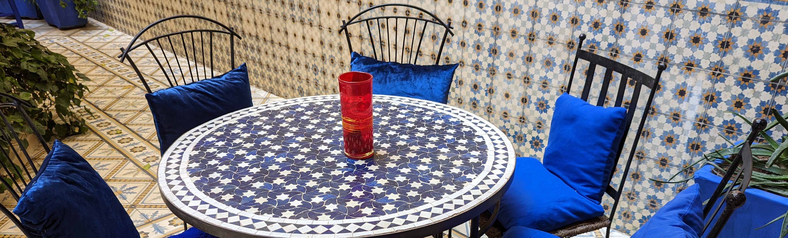